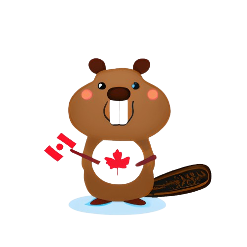
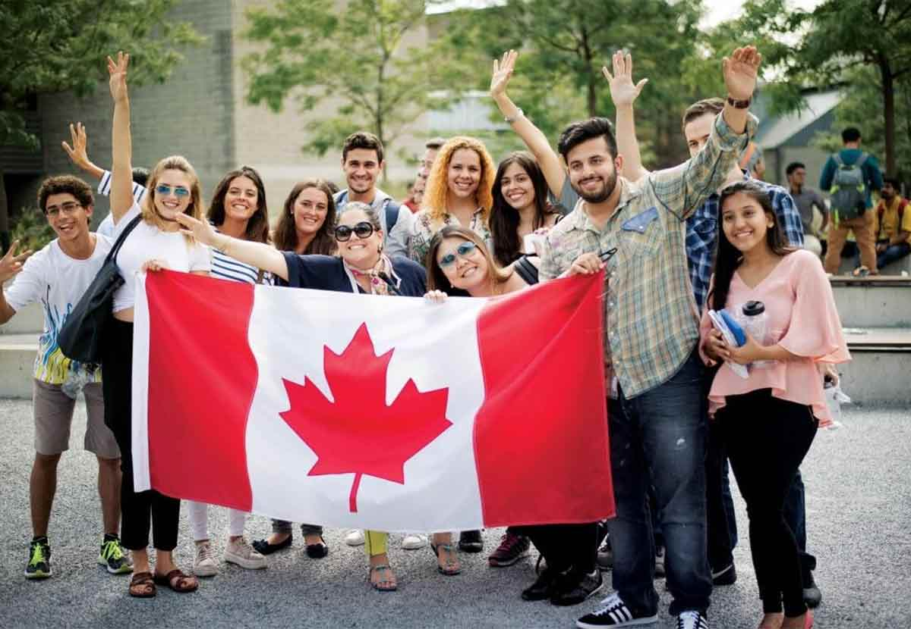
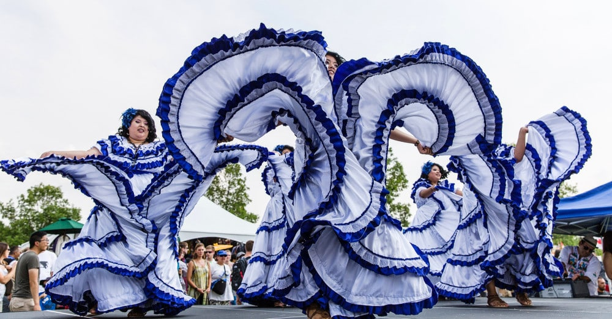
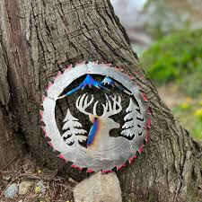

India


AR/VR
Canada is known for its inclusiveness and multiculturalism. French and English are official languages, and immigration shapes its modern identity.
Canada Day, Winterlude, and Calgary Stampede highlight its festive spirit. Indigenous heritage is also celebrated through powwows and cultural programs.
Famous for poutine, maple syrup, and butter tarts, Canadian cuisine also reflects diverse global flavors from its immigrant communities.

Canadian culture values both creative arts and the outdoors. Group of Seven painters, First Nations art, and love for nature define Canadian spirit.
 ← Back to Home